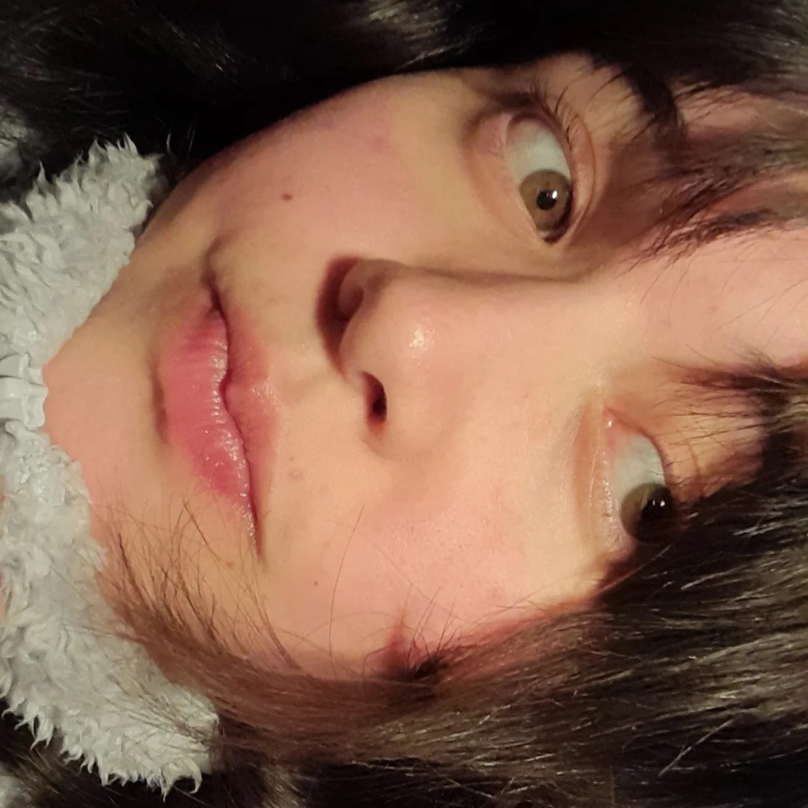

Sobre el proyecto
Un trabajo práctico para Informática General
Sabrina 𖹭.ᐟ
19 ᛝ Artista multimedial ᛝ @sabri.agg_ ₊⊹ Fan de Chapita Roan ₊⊹
Estudio Artes Multimediales en la UNA, me apasiona la música y el arte. Toco el violín, canto, hago ilustraciones y vídeos cada tanto. Pienso en el arte cómo un medio de expresión sumamente valioso que conecta a las personas más allá del idioma. La programación no es mi fuerte, ¡pero este es mi pequeño aporte a la materia!
th.aguirre1226@gmail.com
Tamara ✮⋆˙
21 ᛝ Artista multimedial ᛝ @tammmmmmmmmmmmmmmmmy ₊⊹ Fan de los K-Dramas ₊⊹
Estudiante de Artes Multimediales. Soy tímida y curiosa, por eso desde chiquita encontré un refugio en el arte. Mis gustos son amplios, de ahí que eligiera esta carrera. Me encanta escribir y tengo interés en la historia, especialmente la del arte y la literatura. Creo que el arte y la creatividad son caminos para seguir descubriéndome y compartir un poquito de mí con los demás.
santacruzmelany83@gmail.com¡Contactanos!
¡Haz click aquí para comunicarte con nosotras!